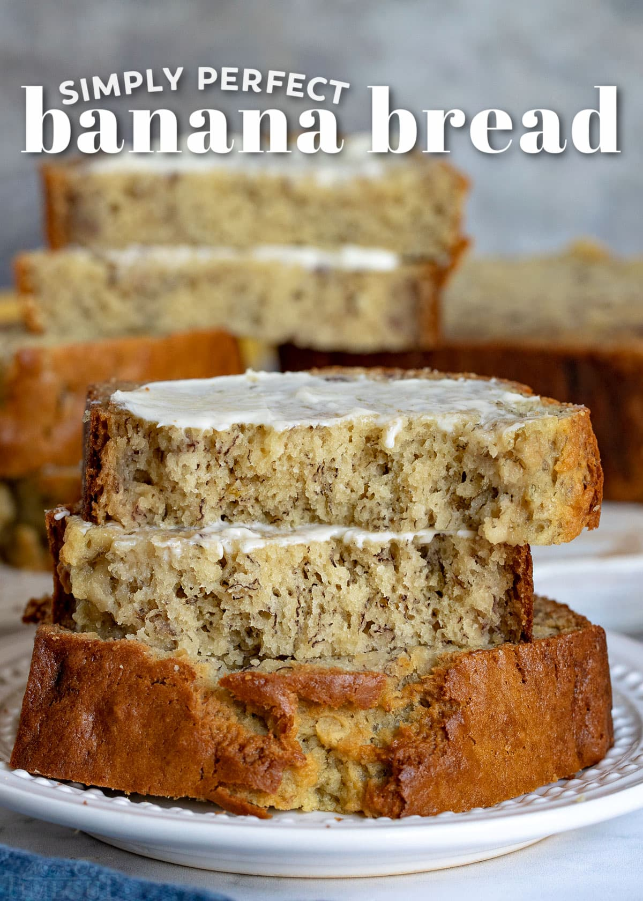

Banana Bread

Ingredients
- 3 to 4 ripe bananas with plenty of brown spots
- Either 1/2 cup brown sugar and 1/4 cup granulated sugar, or reverse the sizes of each depending on taste.
- 2 large eggs at room temperature
- 1/3 cup sour cream or greek yogurt
- 6 tablespoons unsalted butter that has been melted and allowed to cool for 20 minutes
- 1 teaspoon vanilla extract
- 2 cups all purpose flour
- 1 teaspoon baking soda
- 1/2 teaspoon salt
Instructions
- Preheat oven to 350 degrees F. Spray with nonstick cooking spray or grease and flour the bottom and sides of an 8.5 in x 4.5 in loaf pan. Can also butter pan and sprinkle sugar. Set aside
- Whisk together flour, baking soda, and salt in a mdeium bowl.
- Mash bananas in a large bowl using a potato masher, fork, or mixer. There can be small chunks remaining.
- Whisk in sugar, eggs, melted butter, sour cream, and vanilla extract.
- Add flour mixture and stir in gently until just combined. Transfer to laof pan and use spatula to smooth the top.
- Bake for 50 to 60 minutes or until inserted toothpick comes out clean.
- Let bread cool on cooling rack in loaf pan for 15 to 20 minutes. Invert loaf pan and carefuly remove banana bread. Let sit on cooling rack for another hour. Slice and serve.